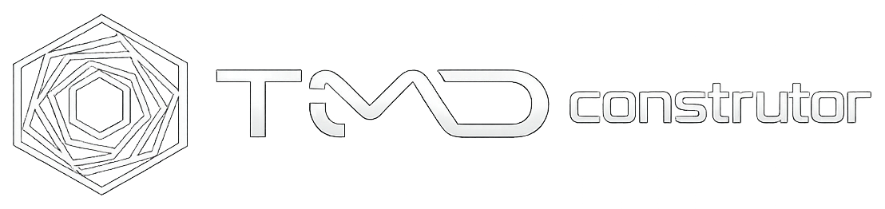
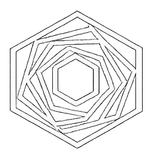
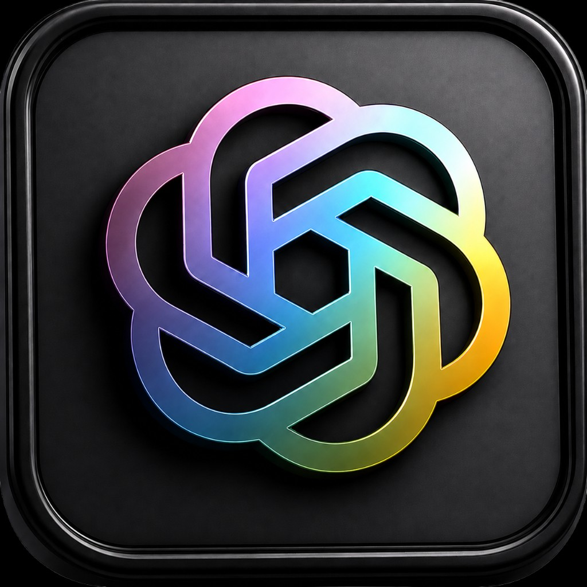
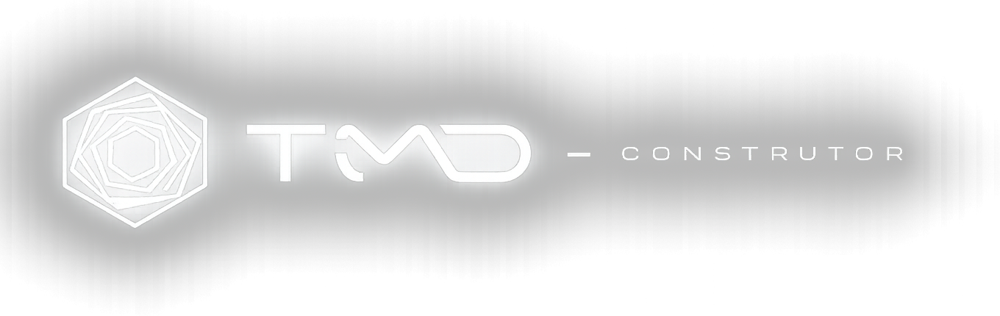

/WARN22 componentes alcançáveis · 13 arquivos Client.
motion@xyflow/react
Estados ausentes: loading, error, 404.
O visual homologado das rotas permanece. O trabalho é conectar cada consumidor à mesma gramática, impedir novas réplicas e decompor a arquitetura sem tocar nas zonas protegidas.
NÃO REMOVER VISUAL APROVADO MIGRAR CONSUMIDORES NÃO AUMENTAR DÍVIDA
Uma única paleta de etapas. Soft, border e glow são derivados, não novas escolhas.
#8B7CFF#49B3FF#F2A65A#37C893O catálogo registra as variações existentes. O header usa a versão canônica; as outras só permanecem quando possuem papel documentado.




Este laboratório é a fonte visual. Variantes são propriedades do mesmo componente, não novas famílias.
Melhoria: retirar detecção de ícone pela string da label; ícone e accessible name devem ser explícitos.
Background do header, borda completa, sem fundo no hover e ícones uniformes à esquerda.
Hierarquia interna por spacing e tipografia, não por caixas dentro de caixas.
As rotas públicas importam mais Client Components e bibliotecas pesadas do que deveriam. O motor interativo continua protegido, mas a composição editorial deve voltar ao servidor.
/WARN22 componentes alcançáveis · 13 arquivos Client.
Estados ausentes: loading, error, 404.
/guia-de-aprendizadoGOOD9 componentes alcançáveis · 4 arquivos Client.
Estados ausentes: loading, error, 404.
/exemplosWARN22 componentes alcançáveis · 13 arquivos Client.
Estados ausentes: loading, error, 404.
/exemplos/fluxoGOOD1 componentes alcançáveis · 0 arquivos Client.
Estados ausentes: loading, error, 404.
/exemplos/visao-do-fluxoWARN22 componentes alcançáveis · 13 arquivos Client.
Estados ausentes: loading, error, 404.
/exemplos/visao-do-fluxo/interativoBAD24 componentes alcançáveis · 20 arquivos Client.
Estados ausentes: loading, error, 404.
/exemplos/resultadoWARN22 componentes alcançáveis · 13 arquivos Client.
Estados ausentes: loading, error, 404.
/exemplos/resultado/interativoBAD25 componentes alcançáveis · 21 arquivos Client.
Estados ausentes: loading, error, 404.
/referenciasWARN22 componentes alcançáveis · 13 arquivos Client.
Estados ausentes: loading, error, 404.
Um agrupamento é um alerta, não uma sentença de exclusão. A decisão é canônico, especialização composta ou papel realmente distinto.
Canônico: a decidir
src/features/theory-of-change/components/example-overview-card/example-overview-card.tsxsrc/features/theory-of-change/components/public-pages/guided-story.tsxsrc/features/theory-of-change/components/public-pages/theory-flow-board.tsxsrc/features/theory-of-change/components/public-experience/example-previews/example-previews-section.tsxsrc/features/theory-of-change/components/public-experience/guide-stage-card/guide-stage-card.tsxsrc/features/theory-of-change/components/result-view/experience/flow-vision-diagram.tsxsrc/features/theory-of-change/components/result-view/experience/result-diagram.tsxsrc/features/theory-of-change/components/result-view/experience/result-report-section.tsxsrc/features/theory-of-change/components/result-view/result-connections-layer/result-connections-layer.tsxsrc/features/theory-of-change/components/result-view/result-diagram/result-diagram.tsxsrc/shared/ui/tdm-public-feature-card/tdm-public-feature-card.tsxCanônico: src/shared/ui/tdm-icon-button/tdm-icon-button.tsx
src/features/theory-of-change/components/floating-header/floating-header.tsxsrc/features/theory-of-change/components/form-field/tdm-form-field.tsxsrc/features/theory-of-change/components/public-pages/public-pages.tsxsrc/features/theory-of-change/components/result-view/result-header/result-header.tsxsrc/features/theory-of-change/components/result-view/result-theory-translator/result-theory-translator-export-menu.tsxsrc/features/theory-of-change/components/result-view/result-theory-translator/result-theory-translator-header.tsxsrc/features/theory-of-change/components/result-view/result-theory-translator/result-theory-translator-pane.tsxsrc/features/theory-of-change/components/result-view/result-toolbar/result-toolbar.tsxsrc/shared/ui/public-icon-button/public-icon-button.tsxsrc/shared/ui/tdm-icon-button/tdm-icon-button.tsxCanônico: src/shared/ui/tdm-surface/tdm-surface.tsx
src/features/theory-of-change/components/public-experience/example-previews/theory-draft-preview.tsxsrc/features/theory-of-change/components/result-view/liquid-glass/glass-surface.tsxsrc/features/theory-of-change/components/result-view/liquid-glass/resource-card.tsxsrc/features/theory-of-change/components/result-view/liquid-glass/resources-panel.tsxsrc/features/theory-of-change/components/result-view/liquid-glass/result-liquid-card.tsxsrc/features/theory-of-change/components/result-view/liquid-glass/result-liquid-column.tsxsrc/features/theory-of-change/components/result-view/result-view-flow-inspector.tsxsrc/features/theory-of-change/components/result-view/result-view.tsxsrc/features/theory-of-change/components/result-view/tdm-glass-surface.tsxsrc/shared/ui/tdm-surface/tdm-surface.tsxCanônico: a decidir
src/features/theory-of-change/components/public-pages/home-brand-logo/home-brand-logo.tsxsrc/features/theory-of-change/components/result-view/experience/flow-vision-interactive-workspace.tsxsrc/features/theory-of-change/components/result-view/experience/flow-vision-node-card.tsxsrc/features/theory-of-change/components/result-view/experience/interactive-experience-shell.tsxsrc/features/theory-of-change/components/result-view/result-experience.tsxsrc/features/theory-of-change/components/result-view/result-node-card/result-node-card.tsxsrc/features/theory-of-change/components/result-view/result-stage-column/result-stage-column.tsxsrc/features/theory-of-change/components/result-view/result-theory-narrative/theory-narrative-document.tsxsrc/shared/ui/tdm-public-design-system/tdm-public-design-system.tsxCanônico: src/shared/ui/tdm-field/tdm-field.tsx
src/app/exemplos/exemplos-client.tsxsrc/features/theory-of-change/components/public-experience/example-previews/flow-draft-preview.tsxsrc/features/theory-of-change/components/public-experience/public-experience.tsxsrc/features/theory-of-change/components/result-view/experience/result-experience-header.tsxsrc/features/theory-of-change/components/result-view/result-theory-narrative/figures/theory-flow-overview-figure.tsxsrc/features/theory-of-change/components/result-view/result-theory-narrative/figures/theory-resources-map-figure.tsxsrc/features/theory-of-change/components/stage-action-drag/stage-action-drag.tsxsrc/shared/ui/tdm-field/tdm-field.tsxCanônico: a decidir
src/features/theory-of-change/components/public-pages/home-onboarding-preview.tsxsrc/features/theory-of-change/components/public-experience/example-previews/dedicated-example-preview.tsxsrc/features/theory-of-change/components/public-experience/example-previews/editorial-preview-primitives.tsxsrc/features/theory-of-change/components/public-experience/example-previews/example-preview-frame.tsxsrc/features/theory-of-change/components/public-experience/example-previews/result-draft-preview.tsxsrc/features/theory-of-change/components/result-preview/tdm-result-preview.tsxsrc/features/theory-of-change/components/result-view/experience/result-interactive-preview.tsxsrc/features/theory-of-change/components/result-view/experience/result-stage-board.tsxCanônico: src/shared/ui/tdm-button/tdm-button.tsx
src/features/theory-of-change/components/canvas-resultado/canvas-resultado-page.tsxsrc/features/theory-of-change/components/result-view/result-empty-state/result-empty-state.tsxsrc/shared/ui/public-button/public-button.tsxsrc/shared/ui/tdm-button/tdm-button.tsxCanônico: src/shared/ui/tdm-tooltip/tdm-tooltip.tsx
src/shared/ui/tdm-tooltip/tdm-tooltip.tsxsrc/shared/ui/tooltip/tdm-anchored-tooltip.tsxEstes arquivos não podem crescer. A extração ocorre sem redesenhar a experiência no mesmo commit.
src/features/theory-of-change/components/result-view/result-view.tsx1388 linhasClient Component: manter apenas se state, eventos, efeitos ou APIs do navegador forem indispensáveis.
src/features/theory-of-change/components/result-view/result-experience.tsx975 linhasClient Component: manter apenas se state, eventos, efeitos ou APIs do navegador forem indispensáveis.
src/features/theory-of-change/components/result-view/experience/flow-vision-interactive-workspace.tsx845 linhasClient Component: manter apenas se state, eventos, efeitos ou APIs do navegador forem indispensáveis.
src/features/theory-of-change/components/public-pages/guided-story.tsx835 linhasZona protegida: auditar e envolver com DS, sem alterar o motor visual nesta fase.
src/features/theory-of-change/components/public-pages/public-pages.tsx526 linhasClient Component: manter apenas se state, eventos, efeitos ou APIs do navegador forem indispensáveis.
src/features/theory-of-change/components/result-view/experience/result-diagram.tsx425 linhasZona protegida: auditar e envolver com DS, sem alterar o motor visual nesta fase.
src/shared/ui/tdm-public-design-system/tdm-public-design-system.tsx422 linhasClient Component: manter apenas se state, eventos, efeitos ou APIs do navegador forem indispensáveis.
src/components/ColorBends/ColorBends.tsx373 linhasClient Component: manter apenas se state, eventos, efeitos ou APIs do navegador forem indispensáveis.
src/features/theory-of-change/components/result-view/result-theory-translator/result-theory-translator-pane.tsx369 linhasClient Component: manter apenas se state, eventos, efeitos ou APIs do navegador forem indispensáveis.
src/features/theory-of-change/components/public-experience/public-experience.tsx360 linhasClient Component: manter apenas se state, eventos, efeitos ou APIs do navegador forem indispensáveis.
src/shared/ui/tooltip/tdm-anchored-tooltip.tsx356 linhasLegado candidato: migrar consumidores antes de remover.
src/features/theory-of-change/components/stage-crystal-icon/tdm-stage-crystal-icon.tsx354 linhasClient Component: manter apenas se state, eventos, efeitos ou APIs do navegador forem indispensáveis.
Loading, erro e 404 compartilham o mesmo frame. O texto muda; a gramática não.
Estamos organizando os elementos desta rota.
Tente novamente sem alterar o contexto do usuário.
O endereço pode ter mudado ou não fazer parte da experiência publicada.
page.tsxlayout.tsxloading.tsxerror.tsxRoteamento e composição mínima. Server por padrão.
ui/styles/tdm/lib/Primitives sem conhecimento de domínio.
learning-guide/flow-vision/result-experience/Cada feature com API pública e mundo próprio.
A migração não é uma reescrita cega. O baseline só pode encolher; arquivo novo nasce estrito.
Todos os componentes TSX alcançados pela auditoria fora do Canvas. O scanner é heurístico: serve para priorizar e bloquear regressões, não substitui revisão humana.
| Componente | Decisão | Tamanho | Boundary | Dívida | Leitura arquitetural |
|---|---|---|---|---|---|
src/app/exemplos/exemplos-client.tsx app-router · route-colocated-client |
ATTENTION CONSOLIDAR | 101 hooks 0 · state 0 · callbacks 0 |
TS: sim · Client: sim Sass Module: sim |
ternários 16 · aninhados 7 cores 1 · !important 0 · strings 2 |
|
src/app/exemplos/fluxo/page.tsx app-router · page:server-default |
GOOD MANTER/OTIMIZAR | 6 hooks 0 · state 0 · callbacks 0 |
TS: sim · Client: não Sass Module: não/indireto |
ternários 0 · aninhados 0 cores 0 · !important 0 · strings 0 |
|
src/app/exemplos/page.tsx app-router · page:server-default |
GOOD MANTER/OTIMIZAR | 6 hooks 0 · state 0 · callbacks 0 |
TS: sim · Client: não Sass Module: não/indireto |
ternários 0 · aninhados 0 cores 0 · !important 0 · strings 0 |
|
src/app/exemplos/resultado/interativo/page.tsx app-router · page:server-default |
GOOD MANTER/OTIMIZAR | 16 hooks 0 · state 0 · callbacks 0 |
TS: sim · Client: não Sass Module: não/indireto |
ternários 0 · aninhados 0 cores 0 · !important 0 · strings 0 |
|
src/app/exemplos/resultado/page.tsx app-router · page:server-default |
GOOD MANTER/OTIMIZAR | 6 hooks 0 · state 0 · callbacks 0 |
TS: sim · Client: não Sass Module: não/indireto |
ternários 0 · aninhados 0 cores 0 · !important 0 · strings 0 |
|
src/app/exemplos/visao-do-fluxo/interativo/page.tsx app-router · page:server-default |
GOOD MANTER/OTIMIZAR | 13 hooks 0 · state 0 · callbacks 0 |
TS: sim · Client: não Sass Module: não/indireto |
ternários 0 · aninhados 0 cores 0 · !important 0 · strings 0 |
|
src/app/exemplos/visao-do-fluxo/page.tsx app-router · page:server-default |
GOOD MANTER/OTIMIZAR | 6 hooks 0 · state 0 · callbacks 0 |
TS: sim · Client: não Sass Module: não/indireto |
ternários 0 · aninhados 0 cores 0 · !important 0 · strings 0 |
|
src/app/guia-de-aprendizado/page.tsx app-router · page:server-default |
ATTENTION MANTER/OTIMIZAR | 6 hooks 0 · state 0 · callbacks 0 |
TS: sim · Client: não Sass Module: não/indireto |
ternários 0 · aninhados 0 cores 0 · !important 0 · strings 0 |
|
src/app/home-color-bends-background.tsx app-router · route-colocated-client |
ATTENTION MANTER/OTIMIZAR | 46 hooks 0 · state 0 · callbacks 0 |
TS: sim · Client: sim Sass Module: sim |
ternários 1 · aninhados 0 cores 1 · !important 0 · strings 0 |
|
src/app/layout.tsx app-router · layout:server-default |
ATTENTION MANTER/OTIMIZAR | 33 hooks 0 · state 0 · callbacks 0 |
TS: sim · Client: não Sass Module: não/indireto |
ternários 0 · aninhados 0 cores 0 · !important 0 · strings 0 |
|
src/app/page.tsx app-router · page:server-default |
GOOD MANTER/OTIMIZAR | 6 hooks 0 · state 0 · callbacks 0 |
TS: sim · Client: não Sass Module: sim |
ternários 0 · aninhados 0 cores 0 · !important 0 · strings 0 |
|
src/app/referencias/page.tsx app-router · page:server-default |
GOOD MANTER/OTIMIZAR | 6 hooks 0 · state 0 · callbacks 0 |
TS: sim · Client: não Sass Module: não/indireto |
ternários 0 · aninhados 0 cores 0 · !important 0 · strings 0 |
|
src/components/ColorBends/ColorBends.tsx root · client-component |
CRITICAL QUEBRAR | 373 hooks 3 · state 0 · callbacks 0 |
TS: sim · Client: sim Sass Module: sim |
ternários 27 · aninhados 0 cores 3 · !important 0 · strings 0 |
|
src/features/theory-of-change/components/canvas-organization-icon/canvas-organization-icon.tsx theory-of-change · component |
GOOD MANTER/OTIMIZAR | 38 hooks 0 · state 0 · callbacks 0 |
TS: sim · Client: não Sass Module: não/indireto |
ternários 1 · aninhados 0 cores 0 · !important 0 · strings 0 |
|
src/features/theory-of-change/components/canvas-resultado/canvas-resultado-page.tsx theory-of-change · client-component |
GOOD CONSOLIDAR | 84 hooks 0 · state 0 · callbacks 0 |
TS: sim · Client: sim Sass Module: sim |
ternários 0 · aninhados 0 cores 0 · !important 0 · strings 6 |
|
src/features/theory-of-change/components/example-overview-card/example-overview-card.tsx theory-of-change · component |
GOOD MANTER/OTIMIZAR | 38 hooks 0 · state 0 · callbacks 0 |
TS: sim · Client: não Sass Module: sim |
ternários 1 · aninhados 0 cores 0 · !important 0 · strings 1 |
|
src/features/theory-of-change/components/floating-header/floating-header.tsx theory-of-change · client-component |
GOOD CONSOLIDAR | 24 hooks 0 · state 0 · callbacks 0 |
TS: sim · Client: sim Sass Module: sim |
ternários 2 · aninhados 0 cores 0 · !important 0 · strings 2 |
|
src/features/theory-of-change/components/form-field/tdm-form-field.tsx theory-of-change · client-component |
GOOD CONSOLIDAR | 214 hooks 0 · state 0 · callbacks 0 |
TS: sim · Client: sim Sass Module: sim |
ternários 16 · aninhados 0 cores 0 · !important 0 · strings 4 |
|
src/features/theory-of-change/components/public-pages/guided-story.tsx theory-of-change · client-component |
CRITICAL PROTEGER | 835 hooks 17 · state 4 · callbacks 5 |
TS: sim · Client: sim Sass Module: sim |
ternários 17 · aninhados 1 cores 0 · !important 0 · strings 11 |
|
src/features/theory-of-change/components/public-pages/home-brand-logo/home-brand-logo.tsx theory-of-change · component |
GOOD MANTER/OTIMIZAR | 41 hooks 0 · state 0 · callbacks 0 |
TS: sim · Client: não Sass Module: sim |
ternários 0 · aninhados 0 cores 0 · !important 0 · strings 0 |
|
src/features/theory-of-change/components/public-pages/home-onboarding-preview.tsx theory-of-change · component |
GOOD MANTER/OTIMIZAR | 2 hooks 0 · state 0 · callbacks 0 |
TS: sim · Client: não Sass Module: sim |
ternários 0 · aninhados 0 cores 0 · !important 0 · strings 0 |
|
src/features/theory-of-change/components/public-pages/public-pages.tsx theory-of-change · client-component |
CRITICAL QUEBRAR | 526 hooks 3 · state 1 · callbacks 0 |
TS: sim · Client: sim Sass Module: sim |
ternários 3 · aninhados 0 cores 0 · !important 0 · strings 47 |
|
src/features/theory-of-change/components/public-pages/theory-flow-board.tsx theory-of-change · client-component |
ATTENTION MANTER/OTIMIZAR | 220 hooks 4 · state 0 · callbacks 0 |
TS: sim · Client: sim Sass Module: sim |
ternários 29 · aninhados 1 cores 1 · !important 0 · strings 0 |
|
src/features/theory-of-change/components/public-experience/example-previews/dedicated-example-preview.tsx theory-of-change · client-component |
ATTENTION MANTER/OTIMIZAR | 34 hooks 0 · state 0 · callbacks 0 |
TS: sim · Client: sim Sass Module: não/indireto |
ternários 3 · aninhados 0 cores 0 · !important 0 · strings 0 |
|
src/features/theory-of-change/components/public-experience/example-previews/editorial-preview-primitives.tsx theory-of-change · client-component |
ATTENTION MANTER/OTIMIZAR | 146 hooks 0 · state 0 · callbacks 0 |
TS: sim · Client: sim Sass Module: sim |
ternários 6 · aninhados 0 cores 1 · !important 0 · strings 0 |
|
src/features/theory-of-change/components/public-experience/example-previews/example-preview-frame.tsx theory-of-change · client-component |
ATTENTION MANTER/OTIMIZAR | 26 hooks 0 · state 0 · callbacks 0 |
TS: sim · Client: sim Sass Module: sim |
ternários 0 · aninhados 0 cores 0 · !important 0 · strings 0 |
|
src/features/theory-of-change/components/public-experience/example-previews/example-previews-section.tsx theory-of-change · client-component |
ATTENTION MANTER/OTIMIZAR | 82 hooks 0 · state 0 · callbacks 0 |
TS: sim · Client: sim Sass Module: sim |
ternários 0 · aninhados 0 cores 0 · !important 0 · strings 7 |
|
src/features/theory-of-change/components/public-experience/example-previews/flow-draft-preview.tsx theory-of-change · client-component |
ATTENTION PROTEGER | 210 hooks 0 · state 0 · callbacks 0 |
TS: sim · Client: sim Sass Module: sim |
ternários 4 · aninhados 0 cores 5 · !important 0 · strings 0 |
|
src/features/theory-of-change/components/public-experience/example-previews/theory-draft-preview.tsx theory-of-change · client-component |
ATTENTION PROTEGER | 241 hooks 0 · state 0 · callbacks 0 |
TS: sim · Client: sim Sass Module: sim |
ternários 4 · aninhados 0 cores 5 · !important 0 · strings 0 |
|
src/features/theory-of-change/components/public-experience/example-previews/result-draft-preview.tsx theory-of-change · client-component |
ATTENTION PROTEGER | 32 hooks 0 · state 0 · callbacks 0 |
TS: sim · Client: sim Sass Module: não/indireto |
ternários 4 · aninhados 0 cores 0 · !important 0 · strings 0 |
|
src/features/theory-of-change/components/public-experience/guide-stage-card/guide-stage-card.tsx theory-of-change · component |
ATTENTION MANTER/OTIMIZAR | 36 hooks 0 · state 0 · callbacks 0 |
TS: sim · Client: não Sass Module: sim |
ternários 3 · aninhados 0 cores 1 · !important 0 · strings 0 |
|
src/features/theory-of-change/components/public-experience/public-experience.tsx theory-of-change · client-component |
CRITICAL QUEBRAR | 360 hooks 2 · state 1 · callbacks 0 |
TS: sim · Client: sim Sass Module: sim |
ternários 15 · aninhados 2 cores 18 · !important 0 · strings 10 |
|
src/features/theory-of-change/components/result-preview/tdm-result-preview.tsx theory-of-change · client-component |
GOOD MANTER/OTIMIZAR | 95 hooks 4 · state 1 · callbacks 0 |
TS: sim · Client: sim Sass Module: sim |
ternários 1 · aninhados 0 cores 0 · !important 0 · strings 1 |
|
src/features/theory-of-change/components/result-view/experience/flow-vision-diagram.tsx theory-of-change · client-component |
ATTENTION PROTEGER | 209 hooks 8 · state 0 · callbacks 3 |
TS: sim · Client: sim Sass Module: sim |
ternários 8 · aninhados 0 cores 0 · !important 0 · strings 0 |
|
src/features/theory-of-change/components/result-view/experience/flow-vision-interactive-workspace.tsx theory-of-change · client-component |
CRITICAL QUEBRAR | 845 hooks 37 · state 2 · callbacks 22 |
TS: sim · Client: sim Sass Module: sim |
ternários 13 · aninhados 0 cores 0 · !important 0 · strings 0 |
|
src/features/theory-of-change/components/result-view/experience/flow-vision-node-card.tsx theory-of-change · client-component |
ATTENTION PROTEGER | 91 hooks 0 · state 0 · callbacks 0 |
TS: sim · Client: sim Sass Module: sim |
ternários 12 · aninhados 2 cores 0 · !important 0 · strings 0 |
|
src/features/theory-of-change/components/result-view/experience/interactive-experience-shell.tsx theory-of-change · client-component |
GOOD MANTER/OTIMIZAR | 79 hooks 1 · state 0 · callbacks 0 |
TS: sim · Client: sim Sass Module: sim |
ternários 2 · aninhados 0 cores 0 · !important 0 · strings 6 |
|
src/features/theory-of-change/components/result-view/experience/result-diagram.tsx theory-of-change · client-component |
CRITICAL PROTEGER | 425 hooks 7 · state 0 · callbacks 3 |
TS: sim · Client: sim Sass Module: sim |
ternários 33 · aninhados 4 cores 2 · !important 0 · strings 0 |
|
src/features/theory-of-change/components/result-view/experience/result-experience-header.tsx theory-of-change · client-component |
ATTENTION CONSOLIDAR | 64 hooks 0 · state 0 · callbacks 0 |
TS: sim · Client: sim Sass Module: sim |
ternários 7 · aninhados 0 cores 0 · !important 0 · strings 6 |
|
src/features/theory-of-change/components/result-view/experience/result-experience-page.tsx theory-of-change · component |
GOOD MANTER/OTIMIZAR | 2 hooks 0 · state 0 · callbacks 0 |
TS: sim · Client: não Sass Module: não/indireto |
ternários 0 · aninhados 0 cores 0 · !important 0 · strings 0 |
|
src/features/theory-of-change/components/result-view/experience/result-export-actions.tsx theory-of-change · client-component |
GOOD MANTER/OTIMIZAR | 23 hooks 0 · state 0 · callbacks 0 |
TS: sim · Client: sim Sass Module: sim |
ternários 0 · aninhados 0 cores 0 · !important 0 · strings 1 |
|
src/features/theory-of-change/components/result-view/experience/result-flow-board.tsx theory-of-change · client-component |
ATTENTION MANTER/OTIMIZAR | 103 hooks 0 · state 0 · callbacks 0 |
TS: sim · Client: sim Sass Module: sim |
ternários 20 · aninhados 2 cores 1 · !important 0 · strings 0 |
|
src/features/theory-of-change/components/result-view/experience/result-interactive-preview.tsx theory-of-change · client-component |
ATTENTION MANTER/OTIMIZAR | 53 hooks 0 · state 0 · callbacks 0 |
TS: sim · Client: sim Sass Module: sim |
ternários 2 · aninhados 0 cores 0 · !important 0 · strings 6 |
|
src/features/theory-of-change/components/result-view/experience/result-interactive-workspace.tsx theory-of-change · client-component |
GOOD MANTER/OTIMIZAR | 15 hooks 0 · state 0 · callbacks 0 |
TS: sim · Client: sim Sass Module: não/indireto |
ternários 0 · aninhados 0 cores 0 · !important 0 · strings 0 |
|
src/features/theory-of-change/components/result-view/experience/result-report-section.tsx theory-of-change · client-component |
ATTENTION MANTER/OTIMIZAR | 71 hooks 0 · state 0 · callbacks 0 |
TS: sim · Client: sim Sass Module: sim |
ternários 4 · aninhados 0 cores 0 · !important 0 · strings 0 |
|
src/features/theory-of-change/components/result-view/experience/result-stage-board.tsx theory-of-change · client-component |
ATTENTION MANTER/OTIMIZAR | 95 hooks 3 · state 0 · callbacks 0 |
TS: sim · Client: sim Sass Module: sim |
ternários 14 · aninhados 5 cores 1 · !important 0 · strings 1 |
|
src/features/theory-of-change/components/result-view/liquid-glass/glass-surface.tsx theory-of-change · client-component |
ATTENTION MIGRAR | 282 hooks 6 · state 2 · callbacks 0 |
TS: sim · Client: sim Sass Module: sim |
ternários 13 · aninhados 0 cores 3 · !important 0 · strings 0 |
|
src/features/theory-of-change/components/result-view/liquid-glass/monochrome-backdrop.tsx theory-of-change · client-component |
ATTENTION MANTER/OTIMIZAR | 209 hooks 0 · state 0 · callbacks 0 |
TS: sim · Client: sim Sass Module: sim |
ternários 10 · aninhados 0 cores 4 · !important 0 · strings 1 |
|
src/features/theory-of-change/components/result-view/liquid-glass/resource-card.tsx theory-of-change · client-component |
ATTENTION CONSOLIDAR | 105 hooks 0 · state 0 · callbacks 0 |
TS: sim · Client: sim Sass Module: sim |
ternários 11 · aninhados 0 cores 6 · !important 0 · strings 3 |
|
src/features/theory-of-change/components/result-view/liquid-glass/resources-panel.tsx theory-of-change · client-component |
ATTENTION CONSOLIDAR | 94 hooks 0 · state 0 · callbacks 0 |
TS: sim · Client: sim Sass Module: sim |
ternários 15 · aninhados 0 cores 9 · !important 0 · strings 1 |
|
src/features/theory-of-change/components/result-view/liquid-glass/result-liquid-card.tsx theory-of-change · client-component |
ATTENTION CONSOLIDAR | 122 hooks 0 · state 0 · callbacks 0 |
TS: sim · Client: sim Sass Module: sim |
ternários 14 · aninhados 0 cores 5 · !important 0 · strings 3 |
|
src/features/theory-of-change/components/result-view/liquid-glass/result-liquid-column.tsx theory-of-change · client-component |
ATTENTION CONSOLIDAR | 101 hooks 0 · state 0 · callbacks 0 |
TS: sim · Client: sim Sass Module: sim |
ternários 13 · aninhados 0 cores 9 · !important 0 · strings 0 |
|
src/features/theory-of-change/components/result-view/result-connections-layer/result-connections-layer.tsx theory-of-change · client-component |
ATTENTION PROTEGER | 199 hooks 0 · state 0 · callbacks 0 |
TS: sim · Client: sim Sass Module: sim |
ternários 28 · aninhados 3 cores 1 · !important 0 · strings 0 |
|
src/features/theory-of-change/components/result-view/result-diagram/result-diagram.tsx theory-of-change · client-component |
GOOD MANTER/OTIMIZAR | 201 hooks 6 · state 0 · callbacks 3 |
TS: sim · Client: sim Sass Module: sim |
ternários 8 · aninhados 0 cores 0 · !important 0 · strings 0 |
|
src/features/theory-of-change/components/result-view/result-empty-state/result-empty-state.tsx theory-of-change · client-component |
GOOD CONSOLIDAR | 30 hooks 0 · state 0 · callbacks 0 |
TS: sim · Client: sim Sass Module: sim |
ternários 3 · aninhados 0 cores 0 · !important 0 · strings 2 |
|
src/features/theory-of-change/components/result-view/result-experience-shell/result-experience-shell.tsx theory-of-change · client-component |
GOOD MANTER/OTIMIZAR | 53 hooks 0 · state 0 · callbacks 0 |
TS: sim · Client: sim Sass Module: sim |
ternários 5 · aninhados 0 cores 0 · !important 0 · strings 0 |
|
src/features/theory-of-change/components/result-view/result-experience.tsx theory-of-change · client-component |
CRITICAL QUEBRAR | 975 hooks 38 · state 3 · callbacks 23 |
TS: sim · Client: sim Sass Module: sim |
ternários 20 · aninhados 0 cores 0 · !important 0 · strings 0 |
|
src/features/theory-of-change/components/result-view/result-header/result-header.tsx theory-of-change · client-component |
GOOD CONSOLIDAR | 59 hooks 0 · state 0 · callbacks 0 |
TS: sim · Client: sim Sass Module: sim |
ternários 3 · aninhados 0 cores 0 · !important 0 · strings 0 |
|
src/features/theory-of-change/components/result-view/result-node-card/result-node-card.tsx theory-of-change · client-component |
ATTENTION PROTEGER | 117 hooks 0 · state 0 · callbacks 0 |
TS: sim · Client: sim Sass Module: sim |
ternários 11 · aninhados 2 cores 0 · !important 0 · strings 3 |
|
src/features/theory-of-change/components/result-view/result-stage-column/result-stage-column.tsx theory-of-change · client-component |
ATTENTION PROTEGER | 46 hooks 0 · state 0 · callbacks 0 |
TS: sim · Client: sim Sass Module: sim |
ternários 2 · aninhados 0 cores 0 · !important 0 · strings 0 |
|
src/features/theory-of-change/components/result-view/result-theory-narrative/figures/theory-convergence-map-figure.tsx theory-of-change · client-component |
GOOD MANTER/OTIMIZAR | 122 hooks 0 · state 0 · callbacks 0 |
TS: sim · Client: sim Sass Module: sim |
ternários 1 · aninhados 0 cores 0 · !important 0 · strings 3 |
|
src/features/theory-of-change/components/result-view/result-theory-narrative/figures/theory-flow-overview-figure.tsx theory-of-change · client-component |
GOOD CONSOLIDAR | 113 hooks 0 · state 0 · callbacks 0 |
TS: sim · Client: sim Sass Module: sim |
ternários 0 · aninhados 0 cores 0 · !important 0 · strings 3 |
|
src/features/theory-of-change/components/result-view/result-theory-narrative/figures/theory-resources-map-figure.tsx theory-of-change · client-component |
GOOD CONSOLIDAR | 134 hooks 0 · state 0 · callbacks 0 |
TS: sim · Client: sim Sass Module: sim |
ternários 0 · aninhados 0 cores 0 · !important 0 · strings 2 |
|
src/features/theory-of-change/components/result-view/result-theory-narrative/theory-document-page.tsx theory-of-change · client-component |
ATTENTION MANTER/OTIMIZAR | 148 hooks 0 · state 0 · callbacks 0 |
TS: sim · Client: sim Sass Module: sim |
ternários 15 · aninhados 4 cores 0 · !important 0 · strings 1 |
|
src/features/theory-of-change/components/result-view/result-theory-narrative/theory-narrative-document.tsx theory-of-change · client-component |
GOOD MANTER/OTIMIZAR | 102 hooks 0 · state 0 · callbacks 0 |
TS: sim · Client: sim Sass Module: sim |
ternários 6 · aninhados 0 cores 0 · !important 0 · strings 1 |
|
src/features/theory-of-change/components/result-view/result-theory-narrative/theory-narrative-flowchart.tsx theory-of-change · component |
ATTENTION MANTER/OTIMIZAR | 101 hooks 0 · state 0 · callbacks 0 |
TS: sim · Client: não Sass Module: sim |
ternários 4 · aninhados 2 cores 0 · !important 0 · strings 0 |
|
src/features/theory-of-change/components/result-view/result-theory-translator/result-theory-translator-export-menu.tsx theory-of-change · client-component |
GOOD CONSOLIDAR | 178 hooks 2 · state 1 · callbacks 0 |
TS: sim · Client: sim Sass Module: sim |
ternários 4 · aninhados 0 cores 0 · !important 0 · strings 2 |
|
src/features/theory-of-change/components/result-view/result-theory-translator/result-theory-translator-header.tsx theory-of-change · component |
GOOD CONSOLIDAR | 57 hooks 0 · state 0 · callbacks 0 |
TS: sim · Client: não Sass Module: sim |
ternários 2 · aninhados 0 cores 0 · !important 0 · strings 0 |
|
src/features/theory-of-change/components/result-view/result-theory-translator/result-theory-translator-pane.tsx theory-of-change · client-component |
CRITICAL QUEBRAR | 369 hooks 6 · state 2 · callbacks 0 |
TS: sim · Client: sim Sass Module: sim |
ternários 19 · aninhados 1 cores 0 · !important 0 · strings 0 |
|
src/features/theory-of-change/components/result-view/result-toolbar/result-toolbar.tsx theory-of-change · client-component |
GOOD CONSOLIDAR | 118 hooks 0 · state 0 · callbacks 0 |
TS: sim · Client: sim Sass Module: sim |
ternários 7 · aninhados 0 cores 0 · !important 0 · strings 12 |
|
src/features/theory-of-change/components/result-view/result-view-blueprint-layer.tsx theory-of-change · client-component |
ATTENTION MANTER/OTIMIZAR | 36 hooks 0 · state 0 · callbacks 0 |
TS: sim · Client: sim Sass Module: sim |
ternários 0 · aninhados 0 cores 2 · !important 0 · strings 0 |
|
src/features/theory-of-change/components/result-view/result-view-flow-inspector.tsx theory-of-change · client-component |
ATTENTION CONSOLIDAR | 139 hooks 0 · state 0 · callbacks 0 |
TS: sim · Client: sim Sass Module: sim |
ternários 9 · aninhados 2 cores 0 · !important 0 · strings 15 |
|
src/features/theory-of-change/components/result-view/result-view-grainient-backdrop.tsx theory-of-change · client-component |
ATTENTION MANTER/OTIMIZAR | 72 hooks 0 · state 0 · callbacks 0 |
TS: sim · Client: sim Sass Module: sim |
ternários 4 · aninhados 0 cores 3 · !important 0 · strings 0 |
|
src/features/theory-of-change/components/result-view/result-view.tsx theory-of-change · client-component |
CRITICAL QUEBRAR | 1388 hooks 30 · state 4 · callbacks 11 |
TS: sim · Client: sim Sass Module: sim |
ternários 87 · aninhados 12 cores 13 · !important 0 · strings 16 |
|
src/features/theory-of-change/components/result-view/result-workspace/result-workspace.tsx theory-of-change · client-component |
ATTENTION MANTER/OTIMIZAR | 121 hooks 2 · state 0 · callbacks 0 |
TS: sim · Client: sim Sass Module: sim |
ternários 11 · aninhados 1 cores 0 · !important 0 · strings 0 |
|
src/features/theory-of-change/components/result-view/tdm-glass-surface.tsx theory-of-change · client-component |
ATTENTION MIGRAR | 286 hooks 6 · state 1 · callbacks 2 |
TS: sim · Client: sim Sass Module: sim |
ternários 11 · aninhados 0 cores 3 · !important 0 · strings 0 |
|
src/features/theory-of-change/components/stage-action-drag/stage-action-drag.tsx theory-of-change · component |
GOOD CONSOLIDAR | 84 hooks 0 · state 0 · callbacks 0 |
TS: sim · Client: não Sass Module: não/indireto |
ternários 12 · aninhados 0 cores 0 · !important 0 · strings 0 |
|
src/features/theory-of-change/components/stage-crystal-icon/tdm-stage-crystal-icon.tsx theory-of-change · client-component |
CRITICAL QUEBRAR | 354 hooks 1 · state 1 · callbacks 0 |
TS: sim · Client: sim Sass Module: sim |
ternários 16 · aninhados 0 cores 4 · !important 0 · strings 0 |
|
src/features/theory-of-change/components/stage-gate/stage-gate.tsx theory-of-change · component |
GOOD MANTER/OTIMIZAR | 56 hooks 0 · state 0 · callbacks 0 |
TS: sim · Client: não Sass Module: sim |
ternários 10 · aninhados 0 cores 0 · !important 0 · strings 1 |
|
src/features/theory-of-change/components/tdm-section-icon/tdm-section-icon.tsx theory-of-change · client-component |
GOOD MANTER/OTIMIZAR | 85 hooks 0 · state 0 · callbacks 0 |
TS: sim · Client: sim Sass Module: sim |
ternários 1 · aninhados 0 cores 0 · !important 0 · strings 0 |
|
src/features/theory-of-change/components/toast/tdm-toast.tsx theory-of-change · client-component |
GOOD MANTER/OTIMIZAR | 130 hooks 1 · state 0 · callbacks 0 |
TS: sim · Client: sim Sass Module: sim |
ternários 7 · aninhados 0 cores 0 · !important 0 · strings 1 |
|
src/features/theory-of-change/export/pdf/theory-pdf-document.tsx theory-of-change · component |
ATTENTION MANTER/OTIMIZAR | 187 hooks 0 · state 0 · callbacks 0 |
TS: sim · Client: não Sass Module: não/indireto |
ternários 1 · aninhados 0 cores 7 · !important 0 · strings 3 |
|
src/shared/motion/tdm-motion/tdm-motion-provider.tsx shared · client-component |
GOOD MANTER/OTIMIZAR | 18 hooks 0 · state 0 · callbacks 0 |
TS: sim · Client: sim Sass Module: não/indireto |
ternários 0 · aninhados 0 cores 0 · !important 0 · strings 0 |
|
src/shared/ui/tdm-public-design-system/tdm-public-design-system.tsx shared · client-component |
CRITICAL QUEBRAR | 422 hooks 3 · state 1 · callbacks 0 |
TS: sim · Client: sim Sass Module: sim |
ternários 48 · aninhados 2 cores 0 · !important 0 · strings 4 |
|
src/shared/ui/public-button/public-button.tsx shared · client-component |
ATTENTION MIGRAR | 218 hooks 0 · state 0 · callbacks 0 |
TS: sim · Client: sim Sass Module: sim |
ternários 11 · aninhados 0 cores 0 · !important 0 · strings 1 |
|
src/shared/ui/public-icon-button/public-icon-button.tsx shared · client-component |
ATTENTION MIGRAR | 67 hooks 0 · state 0 · callbacks 0 |
TS: sim · Client: sim Sass Module: sim |
ternários 0 · aninhados 0 cores 0 · !important 0 · strings 0 |
|
src/shared/ui/tdm-button/tdm-button.tsx shared · client-component |
GOOD REUTILIZAR | 258 hooks 0 · state 0 · callbacks 0 |
TS: sim · Client: sim Sass Module: sim |
ternários 27 · aninhados 0 cores 0 · !important 0 · strings 1 |
|
src/shared/ui/tdm-context-label/tdm-context-label-icons.tsx shared · component |
GOOD MANTER/OTIMIZAR | 147 hooks 0 · state 0 · callbacks 0 |
TS: sim · Client: não Sass Module: não/indireto |
ternários 0 · aninhados 0 cores 0 · !important 0 · strings 0 |
|
src/shared/ui/tdm-context-label/tdm-context-label.tsx shared · component |
GOOD REUTILIZAR | 34 hooks 0 · state 0 · callbacks 0 |
TS: sim · Client: não Sass Module: sim |
ternários 4 · aninhados 0 cores 0 · !important 0 · strings 0 |
|
src/shared/ui/tdm-field/tdm-field.tsx shared · client-component |
GOOD REUTILIZAR | 154 hooks 0 · state 0 · callbacks 0 |
TS: sim · Client: sim Sass Module: sim |
ternários 26 · aninhados 0 cores 0 · !important 0 · strings 0 |
|
src/shared/ui/tdm-icon-button/tdm-icon-button.tsx shared · client-component |
GOOD REUTILIZAR | 75 hooks 0 · state 0 · callbacks 0 |
TS: sim · Client: sim Sass Module: sim |
ternários 5 · aninhados 0 cores 0 · !important 0 · strings 0 |
|
src/shared/ui/tdm-kicker/tdm-kicker.tsx shared · component |
GOOD REUTILIZAR | 22 hooks 0 · state 0 · callbacks 0 |
TS: sim · Client: não Sass Module: sim |
ternários 1 · aninhados 0 cores 0 · !important 0 · strings 0 |
|
src/shared/ui/tdm-public-feature-card/tdm-public-feature-card.tsx shared · component |
GOOD REUTILIZAR | 117 hooks 0 · state 0 · callbacks 0 |
TS: sim · Client: não Sass Module: sim |
ternários 16 · aninhados 0 cores 0 · !important 0 · strings 0 |
|
src/shared/ui/tdm-surface/tdm-surface.tsx shared · component |
GOOD REUTILIZAR | 70 hooks 0 · state 0 · callbacks 0 |
TS: sim · Client: não Sass Module: sim |
ternários 6 · aninhados 0 cores 0 · !important 0 · strings 0 |
|
src/shared/ui/tdm-tooltip/tdm-tooltip.tsx shared · client-component |
GOOD REUTILIZAR | 162 hooks 10 · state 1 · callbacks 6 |
TS: sim · Client: sim Sass Module: sim |
ternários 3 · aninhados 0 cores 0 · !important 0 · strings 0 |
|
src/shared/ui/tooltip/tdm-anchored-tooltip.tsx shared · client-component |
CRITICAL MIGRAR | 356 hooks 11 · state 2 · callbacks 7 |
TS: sim · Client: sim Sass Module: sim |
ternários 15 · aninhados 0 cores 0 · !important 0 · strings 0 |
|
Server por padrão, route groups, loading/error/not-found e organização consistente.
Suspense significativo, lazy fora do componente e menos Effects desnecessários.
Clareza, labels objetivas, ícones familiares e controles agrupados.
Tokens em camadas, papéis de ênfase, menu temporário e acessibilidade.
Componente principal, variants independentes e menos overrides.
Código como verdade, coerência sistêmica e simplicidade precisa.